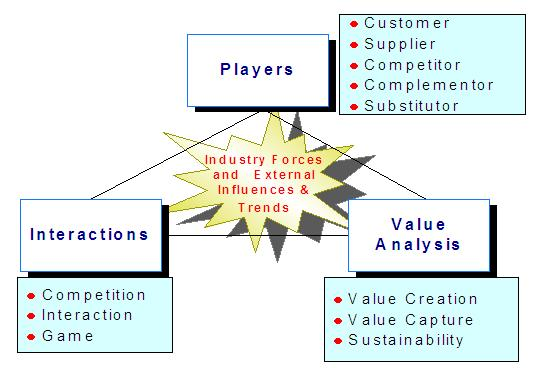
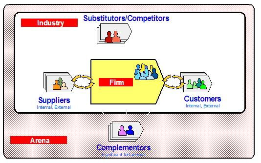
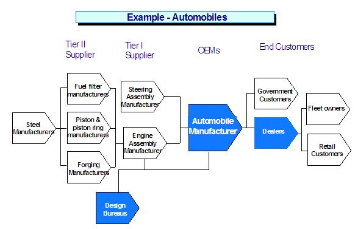
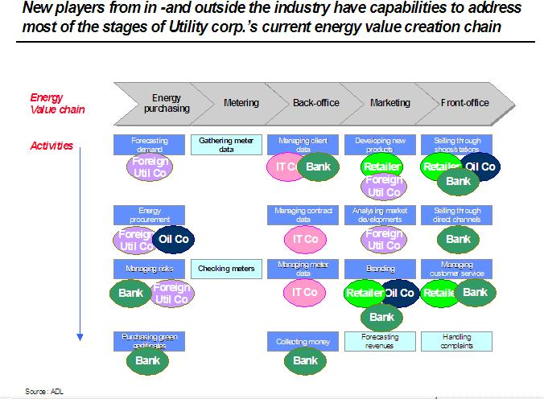
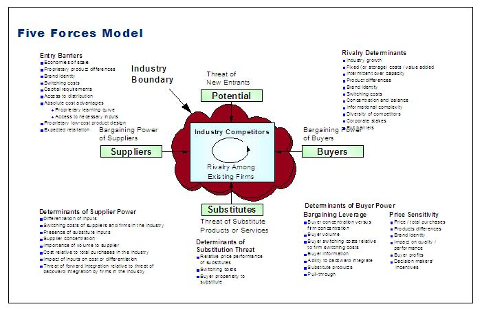
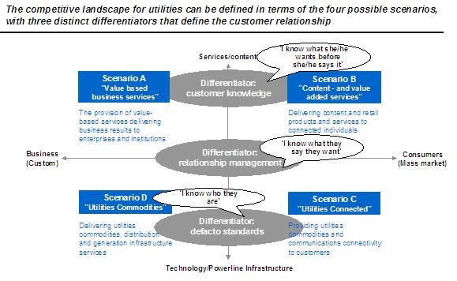

| Artifact: Industry Environment Analysis
(BUS 421)
|
|
 |
| The Industry Environment Analysis work product describes an understanding of the industry environment in which the business entity is operating, and identifying the likely impacts on the future 'to-be' business strategy. |
Domains: Business Strategy
Work Product Kinds: Assessment |
|
Purpose
The purpose of the Industry Environment Analysis is to;
-
analyze the interactions among key players in the business environment and determine how and where value creation
and value capture may be improved
-
analyze market forces in terms of players, external forces and influences, market and value drivers
-
assess the attractiveness of the competitive arena in which they play and identify where they can influence
-
analyze options regarding competitive positioning and value propositions
-
identify alignment opportunities for the organization's business strategies with their desired scope, focus and
participation in the industry
|
Relationships
| Parent Deliverables |
|
| Fulfilled Slots |
|
| Roles | Responsible:
| Modified By:
|
| Tasks | Input To:
| Output From:
|
Description
| Main Description |
This workproduct seeks to understand the players in the business environment, their interactions, the creation and
distribution of value. Industry forces, competitive positions, and external influences and trends, provide additional
information to identify possible threats, opportunities and competitive responses.

Industry Environment analysis can be performed with different objectives, addressing specific questions from the
organization's business entity perspective, relevant to the future business strategy. The four main
objectives considered here are;
-
Scope and participation
-
-
What is the current business scope and focus ("why are we in this business and whom do we serve?"), and
what is the level of participation in the industry (in terms of; size, reach, position, and image).
-
What are the issues to be addressed and what is the desired business scope, focus, and participation in the
industry ("what do we want to achieve").
-
Value analysis
-
-
Which industry players surround the client’s business entity (e.g. value net analysis), what is their place
in the 'value creation network' (e.g. value system analysis), and which interactions exist between the
players.
-
Where is value created and captured (e.g. value chain analysis).
-
Industry forces analysis
-
-
What are the industry structure and forces relevant to the client business entity (e.g. Porter’s five
forces analysis).
-
What external forces are acting upon the industry (e.g. social, technological, economic, environmental and
political developments/influences/trends).
-
Attractiveness Assessment
-
-
Which value drivers have what effect on the value system, and what does it mean for the positioning of the
players.
-
What ‘playing field’ ‘to-be’ scenarios can be distinguished, what are the attractive positions, and what
roles can be played.
-
What competitive forces exist, what are they based on, what competitive response opportunities can be
defined ("can we change the rules of the game").
|
| Notation |
Value Net
A value net illustrates the key Players in a firm’s value system namely: customers, suppliers, complementors and
competitors/substitutors.
-
Competitor/Substitutor: A player is your Competitor/substitutor if customers value your product/service less when
they have the other player's product/service than when they have your product/service alone. In addition, a
player is your substitutor if it is less attractive for a supplier to provide resources to you when it is also
supplying the other player than when it is supplying you alone.
-
Complementor: A player is your complementor if customers value your product/service more when they also have the
other player's product/service than when they have your product/service alone. In addition, a player is your
complementor if it is more attractive for the supplier to provide resources to you when it is also supplying the
other player than when it is supplying you alone.
-
Customers and suppliers play symmetric roles, while competitors and complementors play mirror-image roles.
The Value Net looks to understand not only the activities along a company’s value chain but also to look at how
competitor and complementor relationships can impact strategic decision-making in terms of competition threats and
cooperation opportunities.
-
Successful business strategy is about actively shaping the game you play, not just playing the game you find. Value
Net analysis helps organizations to analyze how to influence the PARTS (Players, Added Value, Rules, Tactics and
Scope) to their advantage in order to create and capture value.
Value Net analysis can also be leveraged to hypothesize a company’s strategy. By analyzing the environment and the
industry, and linking this information to the company’s behavior around the value net, we can derive some insightful
hypotheses as to the company’s strategy.

The players in the business environment can be grouped at three analytical levels - Arena, Industry & Firm.
External Value System
We use the Value System model to map the business environment, and understand the players and their interactions. Using
business context analysis we identify the interactions with a business entity, including the data flows which serve as
the basis for business events and business process identification.

By analyzing the value system we may identify potential threats and opportunities that exist outside the boundaries of
focus of the business entity or that exist in the arena surrounding the industry.
Value chain
Value chains outline the chain of incremental steps in which value is created. Value chain analysis can be used for
example to assess; current positioning and participation, supply/demand chain relationships, chain improvement
opportunities, vertical/horizontal integration opportunities, (dis-)intermediation threats and opportunities, and value
capture.

Competitive Forces model
The competitive forces analysis looks at current state of Porter’s five forces as well as how these forces have changed
over time. The forces include:

-
Bargaining Power of Buyers: the extent to which customers capture total product/service value by forcing the firm
to lower the price of a product/service.
-
Bargaining power of suppliers: the degree to which suppliers capture total product/service value by raising the
price of input to firms.
-
Threat of potential substitutes: Degree to which price/performance of alternative products/services lowers the
maximum price of a firm’s product/service.
-
Threat of new entrants: Degree to which the ability of firms to enter the market lowers the maximum price of a
product/service.
-
Rivalry among existing competitors: Extent to which industry participants compete or cooperate.
External influences and trends
The competitive forces analysis can be augmented by examining some key macro-level trends and influences: Social,
Technological, Economic, Environmental, and Political (STEEP) factors. It may include specific analysis of other
key influences: legal, globalization, deregulation and digitization.
Scenarios
Scenarios analysis can be very effective tool to illustrate possible industry, business or value distribution structure
in the future. The scenarios can be based on interpretations of for example on; how competitive forces, influences and
trends may change the current environment of players, interactions and value distribution.

Competitive Response: ‘Play the Game’ or ‘Change the Rules’
Understanding of the industry environment provides means to analyze opportunities and threats resulting from possible
competitive responses. Some examples of potential responses to a firm’s current environment:
-
Insulating the company in light of the existing industry structure: This response builds defenses against
competitive forces or finds positions in the industry where forces are weakest. Knowledge of the company’s
capabilities and of the forces will instruct the company on where to confront competition and where to avoid
it.
-
Influencing industry structure: This can be done by affecting elements of the five forces or locking in certain
elements of the business environment (e.g. vertical integration with suppliers).
-
Revolutionizing industry structure: This can be done by redrawing industry boundaries, redefining market space and
re-conceiving products and services.
|
Illustrations
Key Considerations
Management involvement and commitment:
-
The Client should have active involvement so they can develop understanding of the strategic positions that will be
driven from this analysis.
-
It is particularly important to gain confidence of management at this early stage in a strategy engagement, and to
seek their views on how best to proceed, offering some alternatives. The final strategy will be theirs to
implement, and, as such, their involvement and commitment to the process and the outcome is essential.
-
Senior Management should review all opportunities and threats and decide which ones they want to investigate
further within the scope of the strategy engagement. Also they should review any issues raised and decide how
they want to address them.
-
Special care must be given to individuals who may feel threatened in any way by the engagement, particularly
business unit managers.
Credibility of the analysis:
-
For analysis credibility purposes, rely on senior industry, functional and technical specialists for competitive
and market sector information. The use of Client’s internal domain specialists at this stage will help build the
support and commitment to the strategy within the client organization.
-
Ensure segmentation and other data is current and not obsolete. It is vital that when market data is analyzed and
used for Industry Environment Analysis, that it is current and reflects the current business environment.
-
Strategic analysis of industry sector and competitive factors is essential for drawing pertinent business based
conclusions from internally and externally sourced information and experience.
General advice:
-
Ask for documented strategy information. Look for vision statement, mission statement, future business goals, list
of key business drivers, management system (organization, opportunity identification, decision making, funding),
key target market segments, list of target wants and needs, key value propositions, list of strategic market
positions, critical success factors, distinctive competencies, critical capabilities.
-
Ask the client for their business intelligence information on market research, segmentation, and company
data.
-
Be prepared to deal with complex organization structures. For example, if a global company, it may be
necessary to understand corporate objectives and identify similarities and differences across subsidiaries.
This may require some or all subsidiaries to be assessed individually.
-
Only produce the briefest documents as summaries of the key findings.
See additional guidance in Estimating Considerations.
|
Tailoring
| Impact of not having |
Failure to understand the business environment will have a negative impact on next business strategy methodology steps
of positioning and configuration.
Understanding a client’s business environment and value chain is an essential input for e-business and many types of IT
consulting engagements to understand the environment and nature of potential linkages with players in the environment.
Without the Industry Environment, the client may not be able to identify potential repercussions or potential negative
responses of players within the value system. In addition, a client may fail to understand how they fit into the value
chain and the threats and opportunities surrounding their current positioning. |
| Reasons for not needing | The work product may not be needed if the client has already performed an equivalent analysis (with or without IBM) and is
willing and able to share the results. If so, the results need to be communicated to the project team to ensure common
awareness. It may also not be needed if the client business environment is very simple or has very limited internal scope
such as the project being focused on operational improvement and the client has little, if any, desire or tolerance for
considering a broader strategic landscape. |
| Representation Options |
The output from the Industry Environment Analysis can take the form of diagrams, tables, figures and text. The
main analysis tools used are value nets, value systems, value chains, competitive forces model (i.e. Porter’s
5-forces), external influences and trends, scenarios, and competitive responses.
|
More Information
| Checklists |
|
| Guidelines |
|
| Supporting Materials |
|
| Estimation Considerations |
|
© Copyright IBM Corp. 1987, 2012 All Rights Reserved
Property of IBM
These materials are intended only for use as part of an IBM engagement |
|